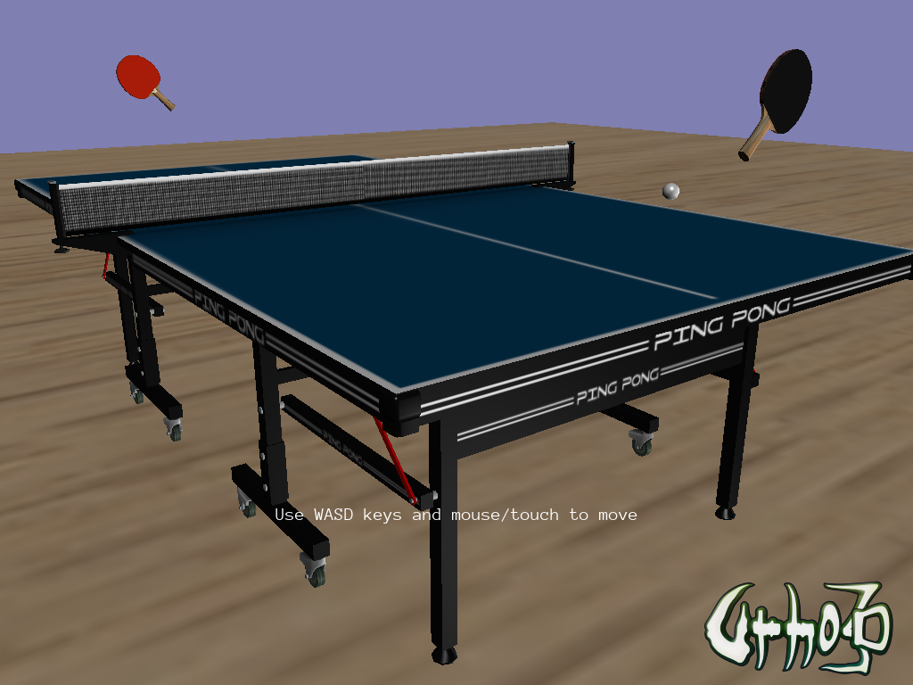

tni711
Hi, are there APIs in Urho3D to import FBX or OBJ 3D models?
Hi, are there APIs in Urho3D to import FBX or OBJ 3D models?

Hi,
I think the short answer may be ‘no’, Urho3D uses its own binary .mdl and .ani formats… With that caveat,
The Urho editor can import models or scenes from the formats that AssetImporter supports.
Blender FBX/OBJ support are good IMHO for use with https://github.com/reattiva/Urho3D-Blender
Hi, thanks for the reply. It is good to know there isn’t one so I can stop keep searching for it

I installed the Urho3D import/export addons as you advise. I am now able to convert my FBX model into mdl format!
Few things I learn in this process.
The export utility only works for Blender Render engine but not the Cycles Render engine.
To export the complete 3D model using the export, you have to select the check boxes
the material, textures, copy textures, export Urho Prefabs.

Thanks for the infos.
There is also more information in the
Urho3D-Blender guide
(which I noticed only too recently
) including material conversion.
A few times I have hacked the exporter .py for some specific [material definitions] output.
Thanks a lot! The Urho3D-Blender guide does provide a lot of information I was trying to reverse engineer from the Python code! I don’t know why I did not take a look of this file closely.
Anyway, Thanks a lot. There is a whole lot to learn as a beginner in this space